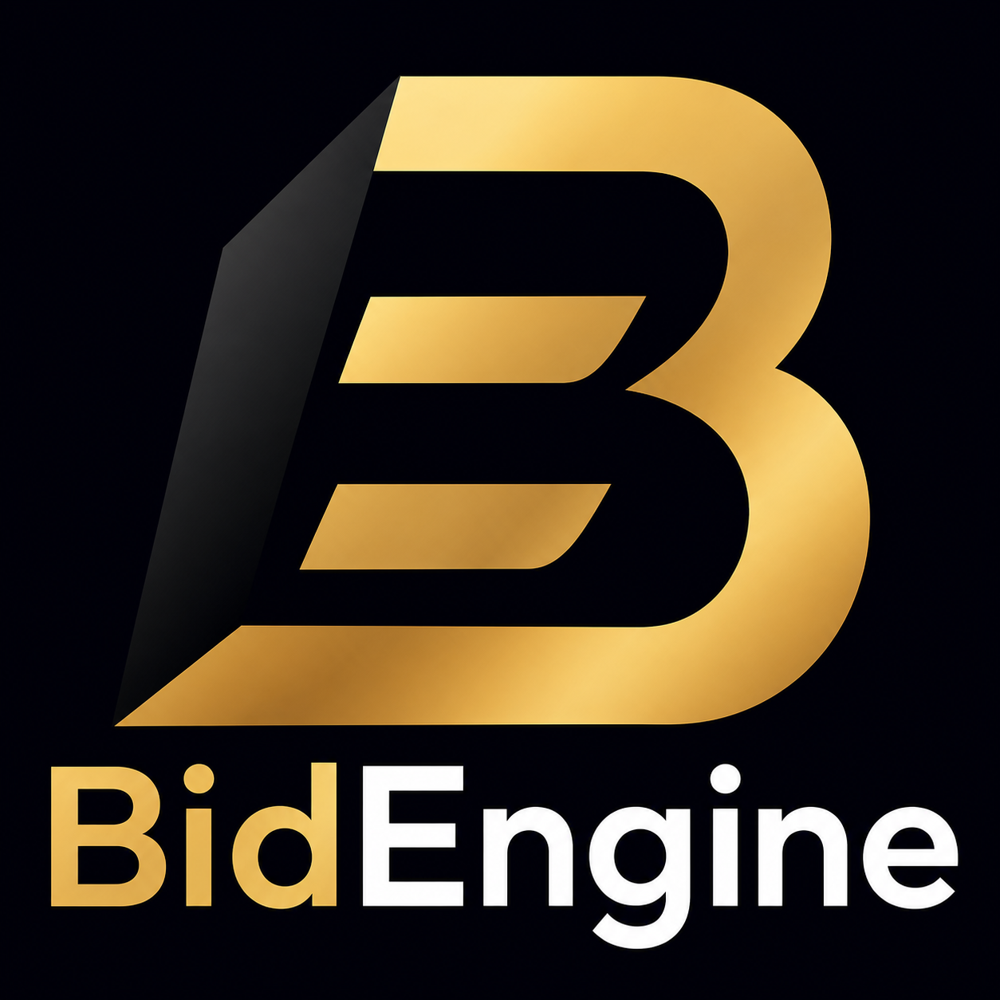
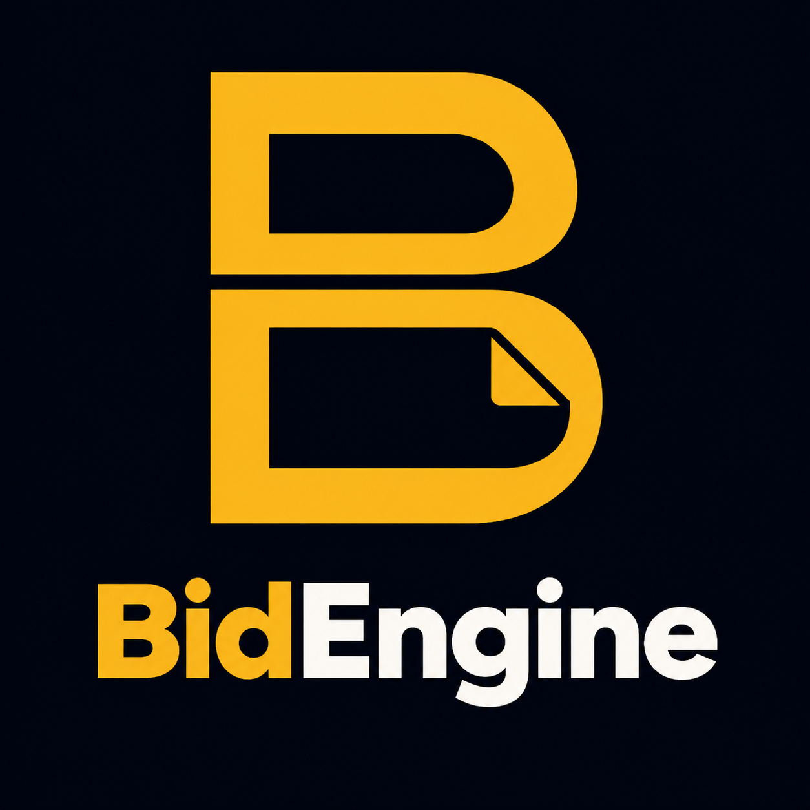
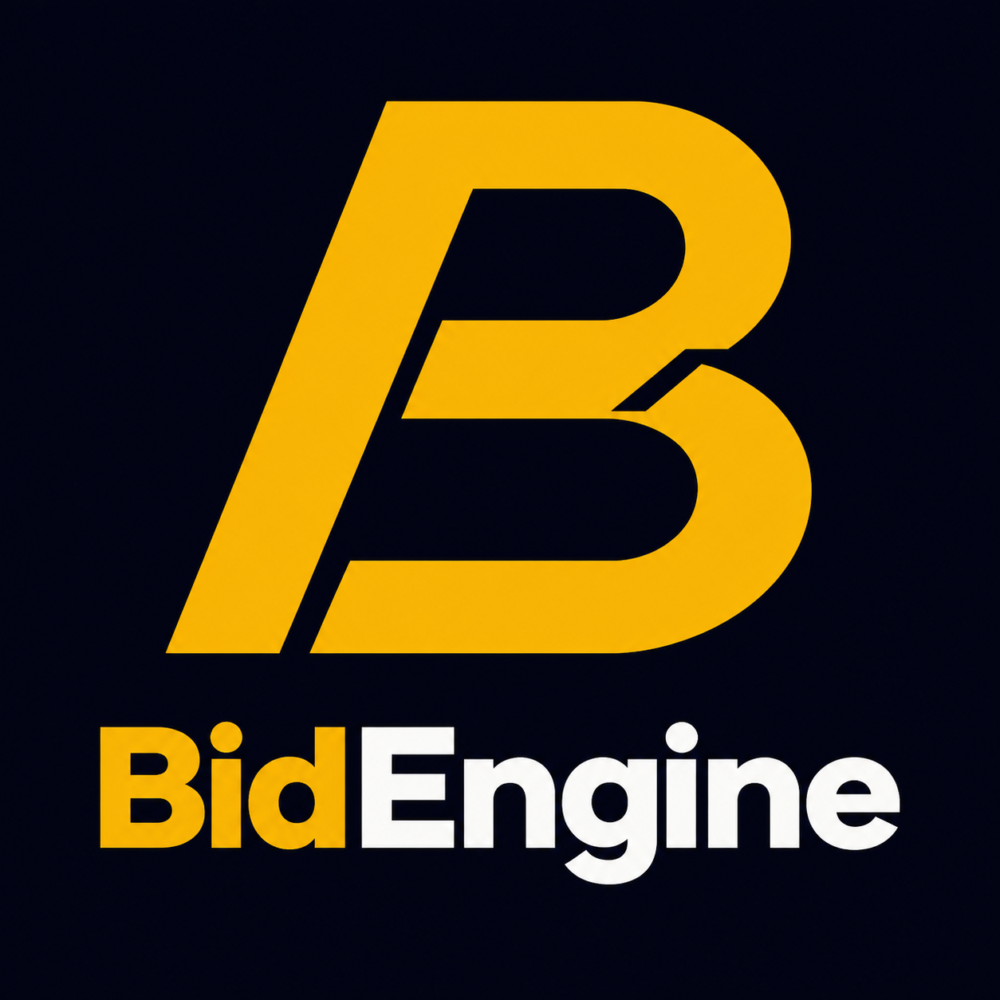
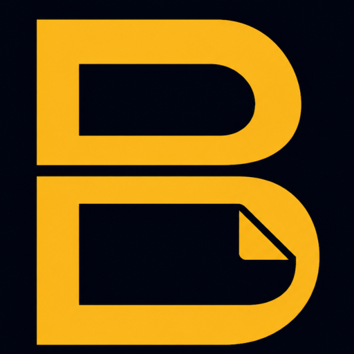
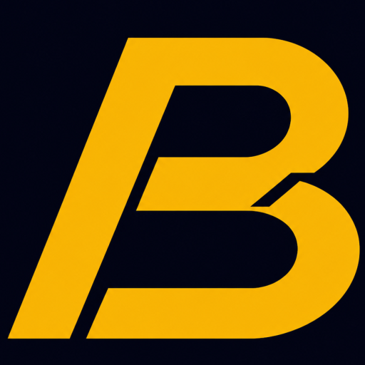

A · 精修当前标志
CURRENT+保留现有角形 B 与金白字标，核心变化是把图形和文字放大到接近满幅，直接解决当前有效内容过小的问题。
- 品牌传承最强
- 主标铺满程度最高
- mark-only 较有力量感
每套都包含紧凑主标和 mark-only 小图标。主标用于品牌展示；浏览器 tab、收起侧栏和头像级场景只使用 mark-only，避免 16–32px 下文字不可读。

保留现有角形 B 与金白字标，核心变化是把图形和文字放大到接近满幅，直接解决当前有效内容过小的问题。

两个文档负形组成 B，下半部只保留一个折角，表达招标文件被结构化理解，同时避免使用普通文件图标。

前倾主轴与校准切口构成更有速度感的 B，强调“标擎”的工程效率与评审精度，不使用靶心或勾选符号。
下列尺寸按 CSS 像素原样展示；16px 是浏览器 tab 的关键门槛。

128
128